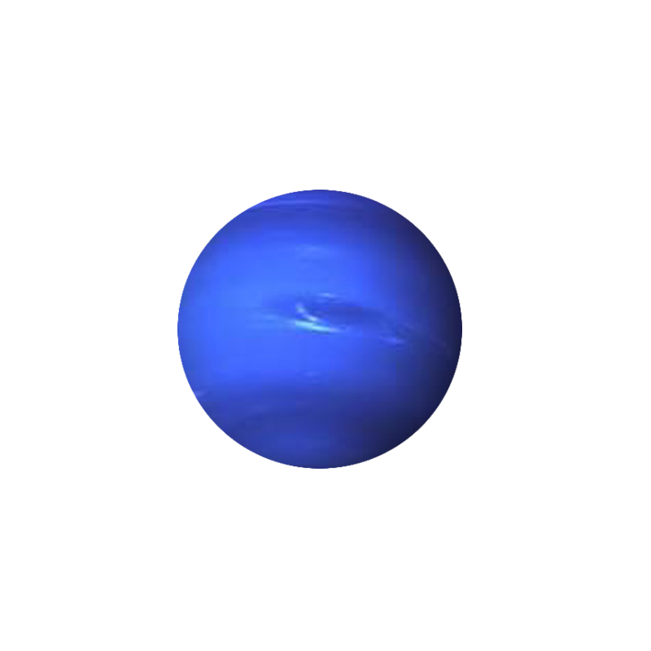

Neptun

-
Atmosfera Neptuna składa się głównie z wodoru i helu, choć zawiera
również większą niż na Jowiszu i Saturnie ilość aerozoli
atmosferycznych, jak amoniak i wodorosiarczek amonu. Z tego względu,
wraz z Uranem, zaliczany jest do lodowych olbrzymów.
- Rok na Neptunie trwa około 165 ziemskich lat.
-
Ma 14 naturalnych satelitów. Największym jest Tryton, odkryty 10
października 1846 roku przez Williama Lassella. Ostatni, a zarazem
najmniejszy księżyc Neptuna – Hippokamp - został odkryty przez Teleskop
Hubble’a w 2013 roku.
-
Masa Neptuna jest siedemnastokrotnie większa niż masa Ziemi, co czyni go
trzecią pod względem masy planetą Układu Słonecznego.
-
Średnia temperatura na Neptunie wynosi -200˚C. W najwyższych partiach
chmur temperatura może spadać do -221˚C.
Powrót na stronę główną